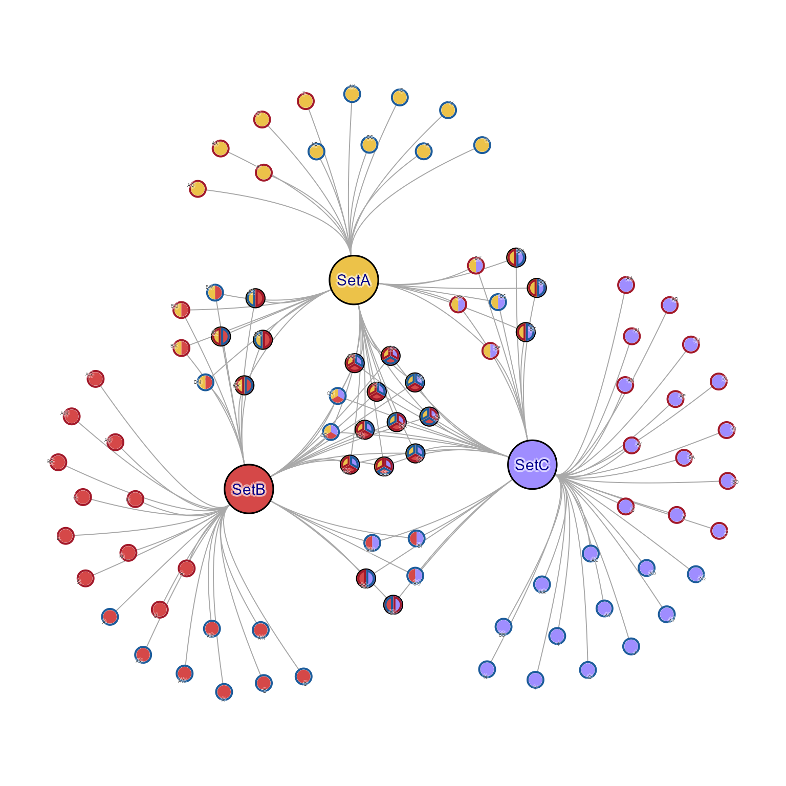
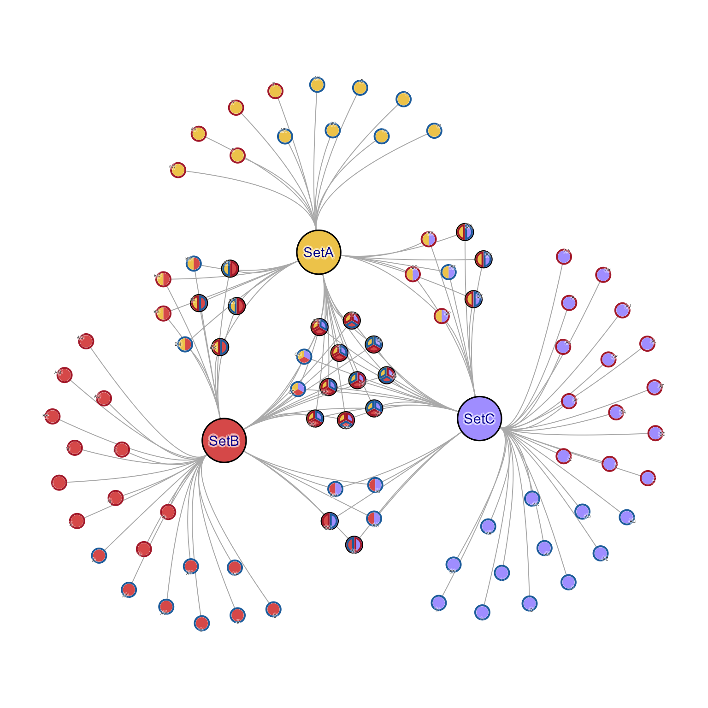
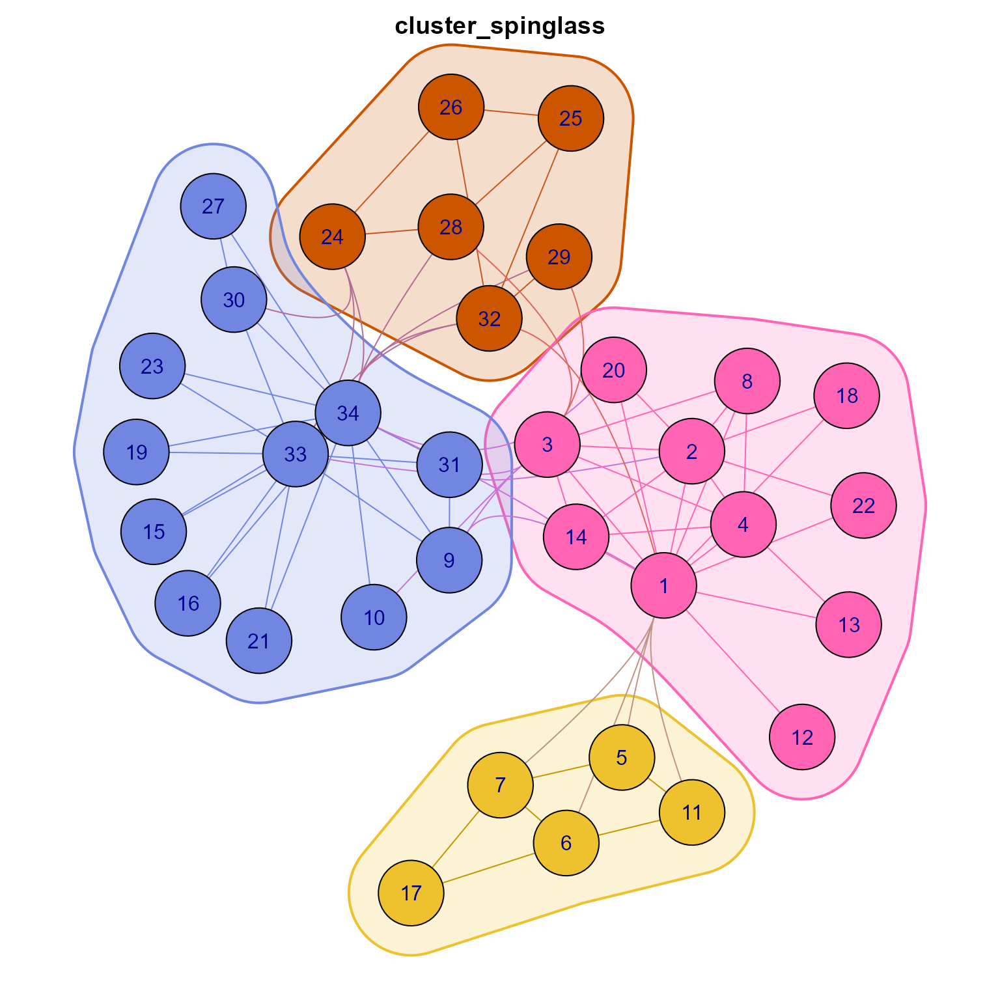
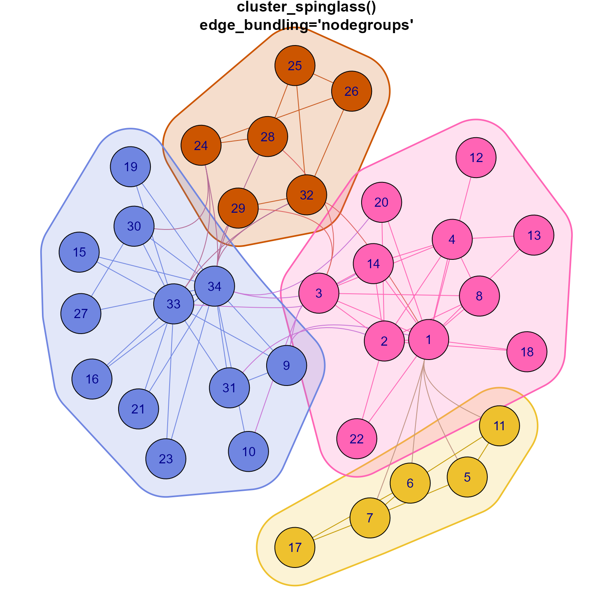
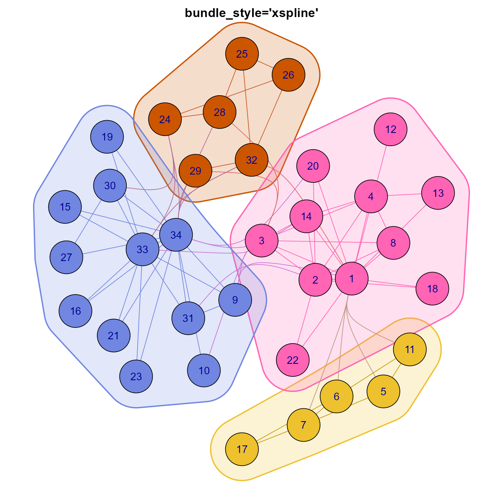
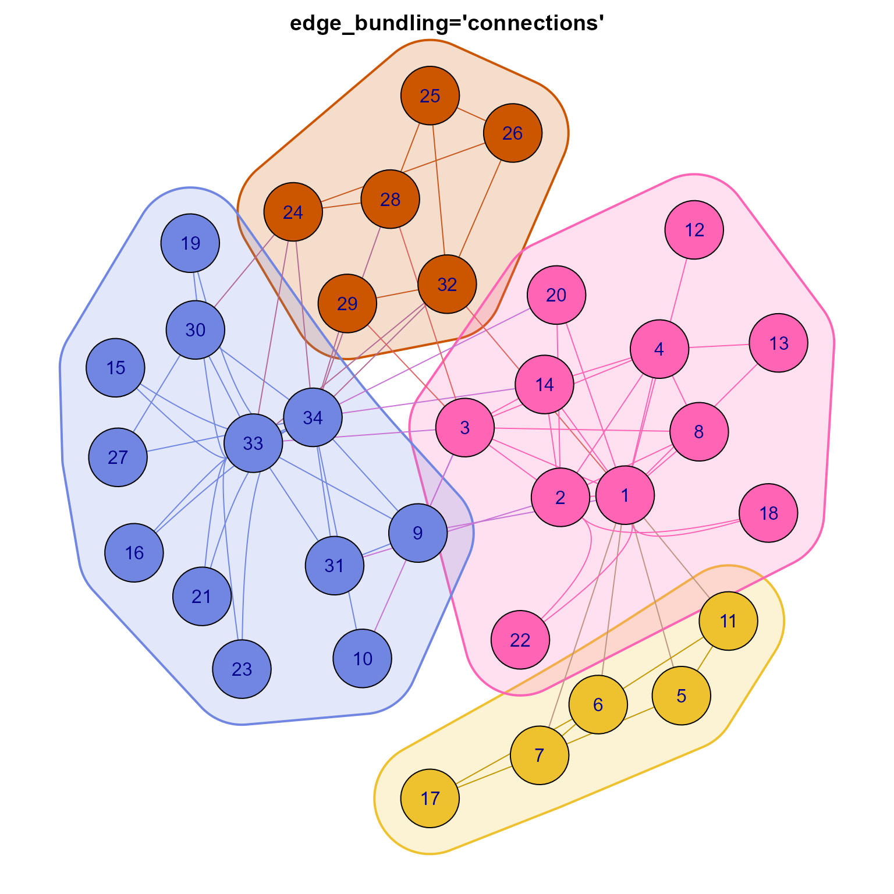
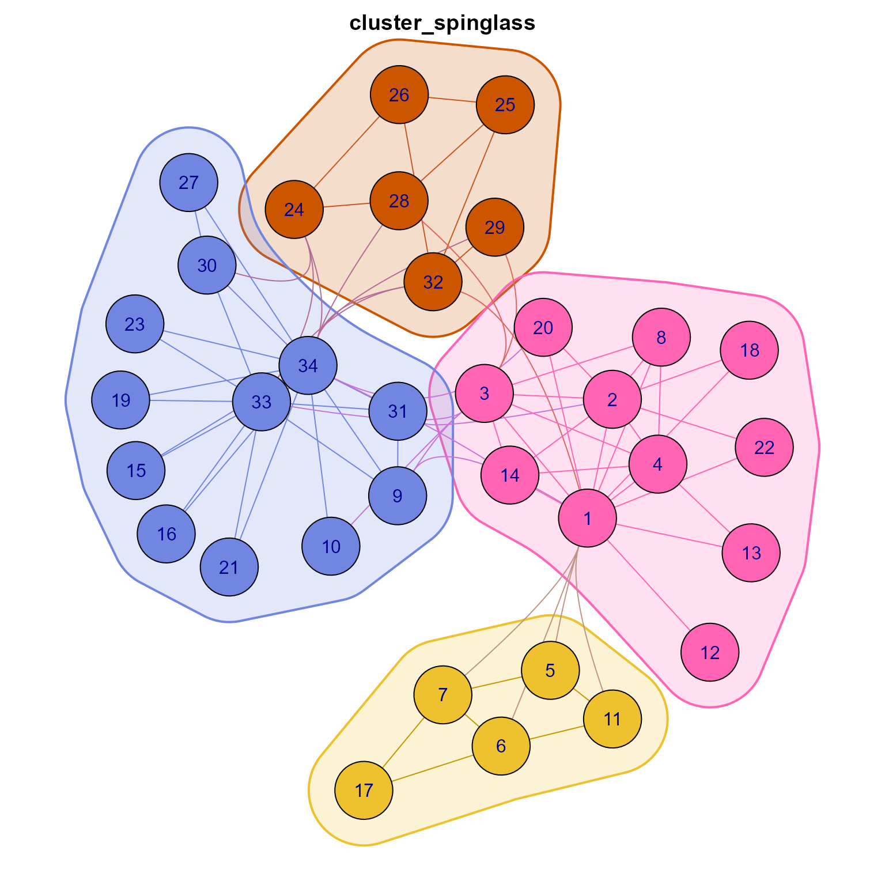
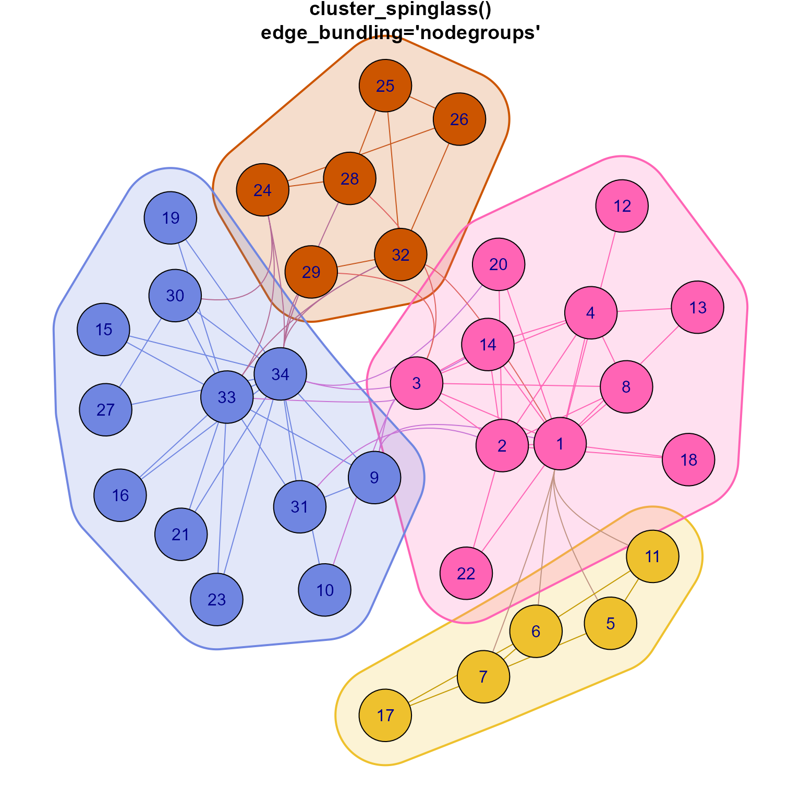
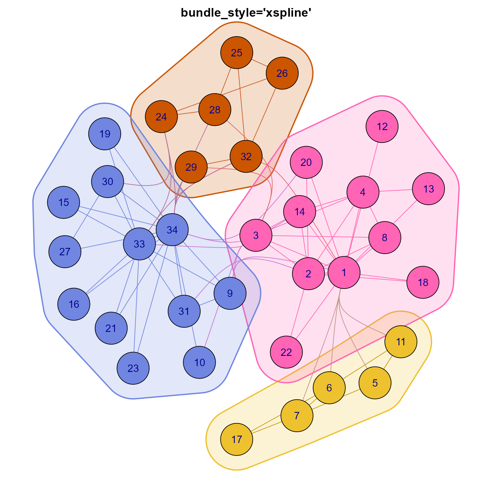
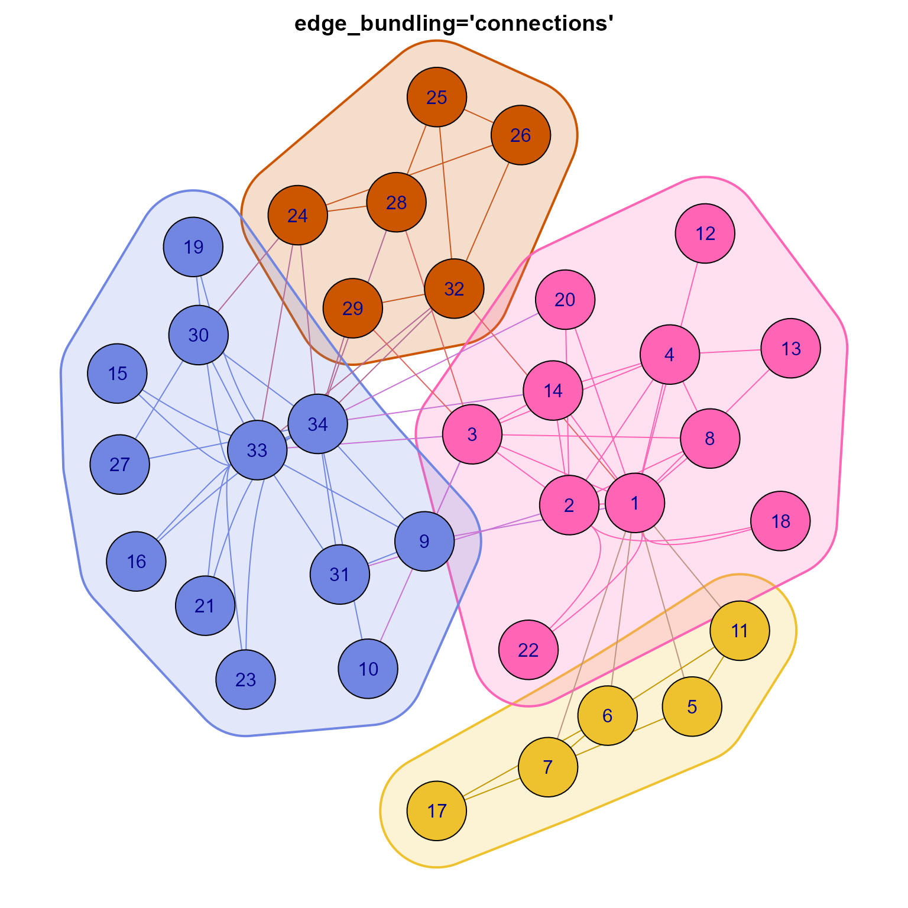

Jam custom function to plot an igraph network
Usage
jam_igraph(
x,
...,
xlim = NULL,
ylim = NULL,
expand = 0.03,
rescale = FALSE,
node_factor = 1,
node_factor_l = NULL,
edge_factor = 1,
edge_factor_l = NULL,
label_factor = 1,
label_factor_l = NULL,
label_fontsize_l = NULL,
label_dist_factor = 1,
label_dist_factor_l = 1,
use_shadowText = FALSE,
edge_bundling = c("default", "connections", "none", "mark.groups", "nodegroups"),
bundle_self = FALSE,
nodegroups = NULL,
render_nodes = TRUE,
render_edges = TRUE,
render_nodelabels = TRUE,
render_groups = TRUE,
vectorized_node_shapes = TRUE,
plot_grid = FALSE,
plot_function = jam_plot_igraph,
mark.groups = list(),
mark.shape = 1/2,
mark.col = NULL,
mark.alpha = 0.2,
mark.border = NULL,
mark.expand = NULL,
mark.lwd = 2,
mark.lty = 1,
mark.smooth = TRUE,
mark.cex = 1,
mark.x.nudge = 0,
mark.y.nudge = 0,
verbose = FALSE,
debug = NULL
)Arguments
- x
igraphobject to be plotted- ...
additional arguments are passed to
igraph::plot.igraph()- xlim, ylim
default x and y axis limits. When either value is
NULLthe range is defined by the layout coordinate ranges, respectively, then expanded by addingexpandto each side of the range.- expand
numericvalue used to expand the x and y axis ranges, where0.03expands each size3%.- rescale
logicalindicating whether to rescale the layout coordinates toc(-1, 1). Whenrescale=FALSEthe original layout coordinates are used as-is without change.- node_factor
numericvalue multiplied byigraph::V(x)$sizeto adjust the relative size of all nodes by a common numeric scalar value.- node_factor_l, label_factor_l, label_dist_factor_l
listof vectors, where the names of thelistare attribute names, and the names of each vector are attributes values. These values are applied in addition tonode_factor,label_factor,label_dist_factor, respectively. The vector values are used as scalar multipliers, analogous tonode_factor. The purpose is to apply scalar values to different subsets of nodes. For example, consider:node_factor_l=list(nodeType=c(Gene=1, Set=2). The list name"nodeType"says to look atigraph::vertex_attr(x, "nodeType"). Nodes withnodeType="Gene"will use1, andnodeType="Set"will use2as the scalar value.- edge_factor
numericvalue multiplied byigraph::E(x)$widthto adjust the relative width of all edges by a common numeric scalar value.- label_factor
numericvalue multiplied byigraph::V(x)$label.cexandigraph::E(x)$label.cexto adjust the relative size of all labels on nodes and edges by a common numeric scalar value.- label_dist_factor
numericvalue multiplied byigraph::V(x)$label.distto adjust the relative distance of all nodes labels from the node center by a common numeric scalar value.- use_shadowText
logicalindicating whether to usejamba::shadowText()instead ofgraphics::text(), in order to render text labels with a subtle shadow-like outline around each label. This change improves legibility of labels at the expense of slightly longer plot rendering time.- edge_bundling
characterstring orfunction, where:"default"will try to detect an appropriate method: whennodegroupsormark.groupsare defined, it chooses the matching option (see below); otherwise it chooses"connections"."none"will perform no edge bundling. This method is best when rendering straight edges, or for rendering multiple identical edges with curvature as defined byigraph::igraph.plotting()."connections"will perform graph edge bundling by shared connections by callingedge_bundle_bipartite()thenedge_bundle_nodegroups(). This option is particularly good for bipartite graphs such as concept networks (cnet plots)."mark.groups"will perform graph edge bundling usingmark.groupsby callingedge_bundle_nodegroups(). This option is equivalent to"nodegroups"except that it usesmark.groupsto define node groupings."nodegroups"will perform graph edge bundling usingnodegroupsby callingedge_bundle_nodegroups(). This option is equivalent to"mark.groups"except that it usesnodegroupsto define node groupings.functionwill call a custom edge bundling function using theigraphobjectxand the igraph parametersparamas input. This output is currently untested, and is intended to enable alternative edge bundling functions which may exist outside this package. The custom function should be able to use the node layout coordinates ingraph_attr(x, "layout"), and render edges between nodes.
- nodegroups
listobject as output byedge_bundle_bipartite()where each list element is acharactervector of vertex node names present inigraph::V(x)$name. If no"name"vertex node attribute exists, then integer index values are used as names. Note that all vertex nodes must be represented innodegroupin order for the corresponding edges to be plotted.- render_nodes, render_edges
logicalindicating whether to render vertex nodes, or edges, respectively. Sometimes it can be useful to call this function for other byproduct outputs, for example,jam_plot_igraph(graph, add=FALSE, render_nodes=FALSE, render_edges=FALSE)will create a new plot device with appropriate axis ranges, and can be used to render edge bundling results for example.- render_nodelabels
logicalindicating whether to draw node labels, which is typically the last operation in the plot sequence. Note that node labels can be rendered without also rendering the nodes or edges.- render_groups
logicalindicating whether to render groups whenmark.groupsis supplied. Groups are rendered with a shaded polygon and border.- vectorized_node_shapes
logicalindicating whether to plot vertex node shapes using vectorized operations. It is substantially faster, however the one drawback is that nodes are plotted in order of their shape, which affects the positioning of nodes when there are node overlaps. This tradeoff is relatively minor, and it is recommended either to reposition nodes to reduce or prevent overlaps, or adjust node sizes to reduce overlaps.- plot_grid
logicalindicating whether to plot a background grid indicating units of 2% across the layout of the network graph. The units are calculated consistent withnudge_igraph_nodes(),adjust_cnet_nodeset()and other functions, scaled relative to the maximum x- or y-coordinate range of layout of the graph. Layout is obtained byget_igraph_layout()which by default uses suppliedlayout, or graph attributeigraph::graph_attr(x, "layout"). Note that by default,jam_igraph()represents the layout with aspect ratio = 1, so x-coordinates and y-coordiantes are represented with the same spacing per unit. This function callsplot_layout_scale()to render the grid lines.- plot_function
functionthat renders the graph, not intended to be changed except for very customized uses. By defaultplot_function=jam_plot_igraph()which calls a modified variant ofigraph:::plot.igraph().- mark.groups
listorigraph::componentsobject from one of the many igraph cluster functions.When not explicitly supplied, it will use graph attributes "mark.groups" as a way of re-using stored sub-clusters. Graph attributes are defined by
mem2emap()for example,igraph::graph_attr(x, "mark.groups"). Note 'mark.colors' is also used when defined together with 'mark.groups'.When 'mark.groups' is
FALSE, it will not apply any 'mark.groups' even when graph attributes contain 'mark.groups'.
- mark.shape
A numeric scalar or vector. Controls the smoothness of the vertex group marking polygons. This is basically the ‘shape’ parameter of the
graphics::xspline()function, its possible values are between -1 and 1. If it is a vector, then a different value is used for the different vertex groups.- mark.col
A scalar or vector giving the colors of marking the polygons, in any format accepted by
graphics::xspline(); e.g. numeric color ids, symbolic color names, or colors in RGB.- mark.alpha
numericvalue between 0 (transparent) and 1 (opaque) indicating the transparency ofmark.colcolor fill values, used only whenmark.groupsis defined, andmark.colis not defined.- mark.border
A scalar or vector giving the colors of the borders of the vertex group marking polygons. If it is
NA, then no border is drawn.- mark.expand
A numeric scalar or vector, the size of the border around the marked vertex groups. It is in the same units as the vertex sizes. If a vector is given, then different values are used for the different vertex groups.
- mark.lwd, mark.lty
line with and line type parameters for each
mark.groupspolygon.- mark.cex
numericadjustment for mark label font size, used whenmark.groupsis supplied and hasnames(mark.groups).- mark.x.nudge, mark.y.nudge
numericvalues in units of the maximum x-axis or y-axis range for the layout coordinates, used to adjust each label displayed whennames(mark.groups)is defined. These arguments are passed tomake_point_hull()aslabel.x.nudge,label.y.nudge, respectively.- verbose
logicalindicating whether to print verbose output.- debug
logicalorcharactervector of attributes for which debug output will be plotted onscreen.
Details
This function is a drop-in replacement of igraph::plot.igraph(),
intended to provide substantially faster vectorized plotting,
to render bundled edges when requested, and
to handle rescale=FALSE without requiring further adjustments.
Note that this function focuses on recognizing graph options and
settings, then passes the work off to jam_plot_igraph()
which performs the heavy work of rendering the graph.
It also provides some convenient methods to adjust node size, label font size, and label distance from node center, based upon node attributes.
vectorized plots
This function calls jam_plot_igraph() as a replacement for
igraph::plot.igraph(), and that function implements vectorized
plot features when vectorized_node_shapes=TRUE by default:
When there are multiple different vertex
"shape"attributes, this function renders nodes vectorized, one shape at a time. In this scenario, the originaligraph::plot.igraph()draws each individual vertex, which is substantially slower (minutes compared to 1-2 seconds) for largeigraphobjects.When there are multiple font families, labels are rendered in groups by font family, in order to comply with limitations in
graphics::text(). This situation is fairly rare, however the speed improvement is substantial, again roughly minutes down to 1-2 seconds. Theigraph::plot.igraph()renders each node label individually when there are multiple font families.
rescale=FALSE
The default igraph::plot.igraph() uses rescale=TRUE, which
can distort the layout coordinates to fit within a fixed
x- and y-axis range c(-1, 1). When using rescale=FALSE the
xlim and ylim values are not adjusted to the actual coordinate
range. The desired effect from this function jam_igraph() is
to apply aspect=1 (asp=1) which fixes the aspect ratio so
the coordinates represent visual Euclidean distance between nodes,
and to define xlim and ylim to accomodate the full layout.
This function also adjusts node vertex.size and vertex.label.dist
proportionally.
edge bundling
When edge_bundling is something other than edge_bundling="none",
edge connections between nodes are rendered using a specific
function by drawing curved splines for each bundle of edges.
The approach in igraph::plot.igraph() only draws
straight edges between nodes. The recommended method is
edge_bundling="default" which will try to detect an appropriate
method to bundle edges. When mark.groups and nodegroups are not
defined, the default method is "connections" which bundles edges
only among nodes that share the same connections. The assumption is
that nodes that share the same connections usually have very similar
layout coordinates, so edge bundling is usually intuitive. In fact,
for a very large set of nodes, they are often in a round cluster
Adjust node size, label size, label distance
The following arguments apply scaling to all nodes or edges:
node_factor-numericmultiplied by node sizeedge_factor-numericmultiplied by edge sizelabel_factor-numericmultiplied by label font sizelabel_dist_factor-numericmultiplied by label distance from node center
New attributes vertex.label.fontsize and edge.label.fontsize
which define fixed fontsize in points for nodes and edges, respectively.
These values are not modified by vertex.label.cex nor edge.label.cex
and are intended to allow control over specific fonts used in the final
figure. Note their calculations are based upon par("ps") which should
represent device-dependent point size. If this value is inappropriate,
it should be adjusted to control the font sizing.
The following arguments apply scale factor based upon node attribute:
node_factor_l-listof named vectors applied to node sizelabel_factor_l-listof named vectors applied aslabel_factor. as a multiplier to label font size.label_fontsize_l-listof named vectors applied to define a specific, fixed label fontsize in points, which is not modified . byvertex.label.cexnorlabel_factor.label_dist_factor_l-listof named vectors applied to label distance from node center
The factor_l technique is as follows:
A specific example:
In this case, nodes with attribute
igraph::V(g)$nodeType == "Gene" will use factor 1.5
Nodes with attribute
igraph::V(g)$nodeType == "Set" will use factor 2
All other nodes will not be adjusted.
Other features
The plot layout by default is not rescaled to c(-1, 1), therefore
allowing direct control over plot dimensions and node sizes.
The plot aspect ratio is fixed at 1, which renders many network layouts
in their intended form, as opposed to scaling each axis to c(-1, 1),
which can impose distortion of intended layout node distances.
When use_shadowText=TRUE node labels call jamba::shadowText()
which draws a small partly transparent outline around labels, making
them more legible when they overlap colored nodes. This step
effectively draws each label n times, which can slightly slow
the rendering of the overall figure.
When pie_to_jampie=TRUE, any nodes with shape="pie" are
changed to shape="jampie" for the purpose of rendering pie
shapes in vectorized fashion, instead of being drawn for each
node separately. This change is a substantial improvement in
rendering time. In addition, optional node attributes are available:
pie.borderto control individual pie wedge borders, which are drawn as inner borders so each pie wedge border is visible withoutpie.lwdto control line width of pie wedge borders.pie.ltyto control the line type of pie wedge bordersframe.colorto control the frame border color drawn around the full circular pie node. This border is drawn as an outer border, so it will not overlap any internal pie wedge border colors.
Default colors for marked node groups mark.col and mark.border
when not defined upfront, will call colorjam::rainbowJam()
and not grDevices::rainbow(). The colorjam::rainbowJam()
produces more visually distinct categorical colors.
This behavior can be controlled by supplying a character
vector with specific colors for mark.col and mark.border. Note
that the border should match the colors, or it can be set to "grey45"
for a generally visible border.
When names(mark.groups) is defined, the values are used as
labels, positioned at the outer edge of each polygon. The label
text size is adjusted with label.cex, and the position can
be adjusted with mark.x.nudge, mark.y.nudge, in units of
fraction of the maximum x- or y-axis range (effectively fraction
of the layout size).
Optional argument nodegroups can be supplied, which is a list
of vectors, where each vector represents a group of nodes. The
nodegroups can be used with edge_bundling="nodegroups" to
define custom edge bundling. This option is useful for defining a
group of nodes for edge bundling, when those nodes should not be used
to render group borders as with mark.groups.
Finally, individual plot components can be individually disabled:
render_nodes=FALSErender_edges=FALSErender_groups=FALSErender_nodelabels=FALSE
See also
Other multienrichjam core functions:
mem_plot_folio(),
multiEnrichMap()
Other jam igraph utilities:
color_edges_by_nodegroups(),
color_edges_by_nodes(),
color_nodes_by_nodegroups(),
get_cnet_nodeset(),
launch_shinycat(),
subgraph_jam()
Examples
# Example with karate
karate <- igraph::make_graph("Zachary");
cl <- igraph::cluster_louvain(karate);
jam_igraph(karate,
layout=layout_with_qfrf(repulse=3.5),
mark.groups=cl,
mark.lwd=c(1:4),
mark.lty=1:4, mark.shape=1,
edge_bundling="default")
 # create example cnet data
cnet <- make_cnet_test(num_sets=3)
## example showing how to use the list form
## This form resizes nodes where igraph::V(g)$nodeType %in% "Gene" by 2x,
## and resizes nodes where igraph::V(g)$nodeType %in% "Set" by 3x.
node_factor_l <- list(nodeType=c(Gene=1.2, Set=2));
## This form multiplies label.dist for nodeType="Gene" nodes by 1,
## and multiplies label.dist for nodeType="Set" nodes by 0.5
label_dist_factor_l <- list(nodeType=c(Gene=1, Set=0.5))
par("mar"=c(0, 0, 0, 0) + 0.5);
jam_igraph(cnet,
use_shadowText=TRUE,
node_factor_l=node_factor_l,
label_factor=0.6,
label_factor_l=list(nodeType=c(Gene=1, Set=2)))

par("mar"=c(2, 2, 2, 2));
# Example using edge bundling by community detection
g <- igraph::make_graph("Zachary");
gcom <- igraph::cluster_leading_eigen(g);
jam_igraph(g,
layout=layout_with_qfr,
edge_bundling="nodegroups",
mark.groups=gcom,
nodegroups=gcom,
vertex.color=colorjam::group2colors(gcom$membership))
# create example cnet data
cnet <- make_cnet_test(num_sets=3)
## example showing how to use the list form
## This form resizes nodes where igraph::V(g)$nodeType %in% "Gene" by 2x,
## and resizes nodes where igraph::V(g)$nodeType %in% "Set" by 3x.
node_factor_l <- list(nodeType=c(Gene=1.2, Set=2));
## This form multiplies label.dist for nodeType="Gene" nodes by 1,
## and multiplies label.dist for nodeType="Set" nodes by 0.5
label_dist_factor_l <- list(nodeType=c(Gene=1, Set=0.5))
par("mar"=c(0, 0, 0, 0) + 0.5);
jam_igraph(cnet,
use_shadowText=TRUE,
node_factor_l=node_factor_l,
label_factor=0.6,
label_factor_l=list(nodeType=c(Gene=1, Set=2)))

par("mar"=c(2, 2, 2, 2));
# Example using edge bundling by community detection
g <- igraph::make_graph("Zachary");
gcom <- igraph::cluster_leading_eigen(g);
jam_igraph(g,
layout=layout_with_qfr,
edge_bundling="nodegroups",
mark.groups=gcom,
nodegroups=gcom,
vertex.color=colorjam::group2colors(gcom$membership))
 cfuncs <- list(cluster_leading_eigen=igraph::cluster_leading_eigen,
cluster_edge_betweenness=igraph::cluster_edge_betweenness,
cluster_fast_greedy=igraph::cluster_fast_greedy,
cluster_spinglass=igraph::cluster_spinglass)
for (i in seq_along(cfuncs)) {
cfunc <- cfuncs[[i]];
gcom <- cfunc(g);
igraph::V(g)$color <- colorjam::group2colors(gcom$membership);
g <- color_edges_by_nodes(g);
set.seed(123);
jam_igraph(g,
layout=layout_with_qfr,
edge_bundling="nodegroups",
nodegroups=gcom,
mark.groups=gcom)
title(main=names(cfuncs)[i]);
}
cfuncs <- list(cluster_leading_eigen=igraph::cluster_leading_eigen,
cluster_edge_betweenness=igraph::cluster_edge_betweenness,
cluster_fast_greedy=igraph::cluster_fast_greedy,
cluster_spinglass=igraph::cluster_spinglass)
for (i in seq_along(cfuncs)) {
cfunc <- cfuncs[[i]];
gcom <- cfunc(g);
igraph::V(g)$color <- colorjam::group2colors(gcom$membership);
g <- color_edges_by_nodes(g);
set.seed(123);
jam_igraph(g,
layout=layout_with_qfr,
edge_bundling="nodegroups",
nodegroups=gcom,
mark.groups=gcom)
title(main=names(cfuncs)[i]);
}


 
# fancy example showing mark.groups and colorizing
# edges using node colors
gcom <- igraph::cluster_spinglass(g);
igraph::V(g)$color <- colorjam::group2colors(gcom$membership);
g <- color_edges_by_nodes(g);
jam_igraph(g,
layout=layout_with_qfrf(repulse=3.2),
edge_bundling="nodegroups",
nodegroups=gcom,
mark.groups=gcom)
title(main=paste0("cluster_spinglass()\n",
"edge_bundling='nodegroups'"))

# same but different edge_style
jam_igraph(g,
layout=layout_with_qfrf(repulse=3.2),
edge_bundling="nodegroups",
nodegroups=gcom,
mark.groups=gcom,
bundle_style="xspline",
detail=14)
title(main="bundle_style='xspline'")

# same but using node connections
jam_igraph(g,
layout=layout_with_qfrf(repulse=3.2),
edge_bundling="connections",
nodegroups=gcom,
mark.groups=gcom)
title(main="edge_bundling='connections'")


# fancy example showing mark.groups and colorizing
# edges using node colors
gcom <- igraph::cluster_spinglass(g);
igraph::V(g)$color <- colorjam::group2colors(gcom$membership);
g <- color_edges_by_nodes(g);
jam_igraph(g,
layout=layout_with_qfrf(repulse=3.2),
edge_bundling="nodegroups",
nodegroups=gcom,
mark.groups=gcom)
title(main=paste0("cluster_spinglass()\n",
"edge_bundling='nodegroups'"))

# same but different edge_style
jam_igraph(g,
layout=layout_with_qfrf(repulse=3.2),
edge_bundling="nodegroups",
nodegroups=gcom,
mark.groups=gcom,
bundle_style="xspline",
detail=14)
title(main="bundle_style='xspline'")

# same but using node connections
jam_igraph(g,
layout=layout_with_qfrf(repulse=3.2),
edge_bundling="connections",
nodegroups=gcom,
mark.groups=gcom)
title(main="edge_bundling='connections'")
